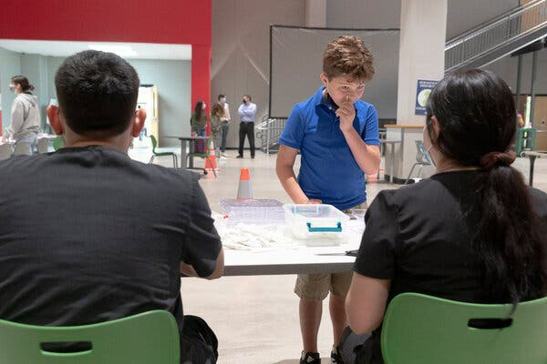

To Get Back Executive, China Brandishes a Hardball Tactic: Seizing Foreigners
The speed at which Beijing returned two Canadians in exchange for a Huawei executive may signal China’s comfort with the tactic.
The speed at which Beijing returned two Canadians in exchange for a Huawei executive may signal China’s comfort with the tactic.
Meng Wanzhou, a Huawei executive, leaving the Vancouver, British Columbia,
home in which she was under house arrest.
Two Canadians held in China since 2018 were on their way home after the deal to release Meng Wanzhou.
‘I Need an Army’: Across America, Schools Cram for Their Covid Tests
Some districts have established robust virus testing programs, but many others are struggling.

A visit in an army school, where soldiers came to recruit young
soldiers.
States Begin a Complex Booster Shot Rollout for Pfizer Recipients
Health officials are preparing to start giving booster shots to older and at-risk Americans while trying to make sense of new eligibility guidelines.
Opinion
The speed at which Beijing returned two Canadians in exchange for a Huawei executive may signal China’s comfort with the tactic.